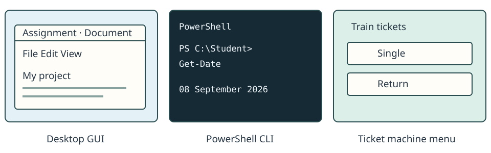
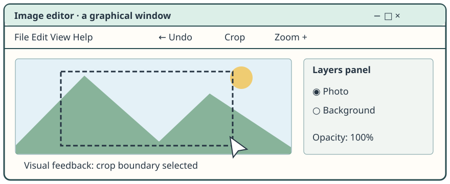
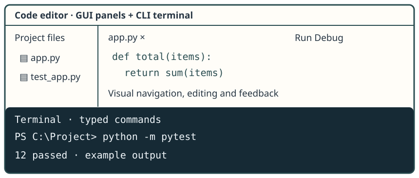

01 · User interfaces
What is a user interface?
A user interface is the way a person interacts with a computer system or software.

Opening a document, typing an instruction and choosing a ticket all involve giving input and receiving feedback.
02 · User interfaces
Three interface styles to know
Graphical User Interface · GUI
Interact with visual controls using a pointer, touch or keyboard.
Command-Line Interface · CLI
Type commands and read their output in a terminal.
Menu-based interface
Choose from predefined options in a guided workflow.
These are interface styles. Real systems can combine them.
Graphical interfaces
03 · User interfaces
Graphical User Interface

A GUI presents windows or panels, icons, buttons and menus. You select or manipulate items with a pointer or touch; keyboard navigation and shortcuts can also work. Visual feedback shows the effect of your action.
04 · User interfaces
Why GUIs are easy to learn
Discoverability means being able to find available actions.
A labelled Crop button suggests what you can do. An Undo control offers a visible way back. You can explore menus rather than first remembering a command. Unclear icons and hidden controls can still be confusing.
GUIs reduce the need to memorise commands.
05 · User interfaces
GUI strengths and limitations
Strengths
Explore and learn
Visible controls often lower the learning barrier. Labels,
keyboard focus and screen-reader support can make a
well-designed GUI accessible.
Work visually
Drag a crop boundary on a photograph and see the result
immediately. Pointer and touch interaction suit direct
manipulation.
Limitations
Repeat a task
Inspecting hundreds of files through dialogs can require many
clicks. Advanced options may be hidden; automation can be
harder than using scriptable commands.
Consider resources
Graphical desktops can need more screen space, memory and
processing than a text interface. The actual overhead depends
on the software and task.
Explore and learn
Visible controls often lower the learning barrier. Labels, keyboard focus and screen-reader support can make a well-designed GUI accessible.
Work visually
Drag a crop boundary on a photograph and see the result immediately. Pointer and touch interaction suit direct manipulation.
Repeat a task
Inspecting hundreds of files through dialogs can require many clicks. Advanced options may be hidden; automation can be harder than using scriptable commands.
Consider resources
Graphical desktops can need more screen space, memory and processing than a text interface. The actual overhead depends on the software and task.
Command-line interfaces
06 · User interfaces
What is a command-line interface?
In a CLI, the user types commands rather than primarily clicking graphical controls.
Prompt: PS C:\Users\Student>
Command: Get-Process
Process ID browser 124 editor 248
Output: a simplified list of running processes.
PowerShell is our Windows classroom example. A terminal is the window for text interaction; PowerShell interprets the commands. Focus on what the interaction achieves, not memorising syntax.
07 · User interfaces
Prompt, command and output
-
Prompt
The environment is ready for your next instruction. -
Command
You type the instruction and press Enter. -
Output
The command returns a result; another prompt lets you continue.
Simulated PowerShell
Fictional example data. This teaching terminal does not access your computer. Load an example or type it, then press Enter.
Prompt and command
PS C:\Users\Student> Get-DateOutput
08 September 2026 10:15:00 Example date and time — fixed for this simulation.
Up/Down recalls commands entered here. Example buttons fill the command box.
Optional live demo: Run Get-Date in
PowerShell and compare with the fixed example date.
08 · User interfaces
Where am I working?
The current working location is where commands look by default when you do not give another path. Here it is the fictional Student folder.
Simulated PowerShell
Fictional example data. This teaching terminal does not access your computer. Load an example or type it, then press Enter.
Prompt and command
PS C:\Users\Student> Get-LocationOutput
Path ---- C:\Users\Student
Up/Down recalls commands entered here. Example buttons fill the command box.
Optional live demo: Run
Get-Location and compare the real path with the
fictional Student folder.
09 · User interfaces
Inspect a folder without File Explorer
A directory is a folder. A listing lets you inspect its files and subfolders without opening a graphical file manager. Reading a listing does not change those files.
Simulated PowerShell
Fictional example data. This teaching terminal does not access your computer. Load an example or type it, then press Enter.
Prompt and command
PS C:\Users\Student> Get-ChildItemOutput
Name Type ---- ---- Documents Folder Pictures Folder assignment.txt File notes.txt File
Up/Down recalls commands entered here. Example buttons fill the command box.
Optional live demo: If permitted, use
Get-ChildItem in a suitable classroom folder.
10 · User interfaces
Inspect running processes
A process is a running instance of a program, as in the kernel lesson. A CLI can report processes as a table. The ID identifies a process; CPU here is accumulated processor time in seconds, not current CPU percentage.
Simulated PowerShell
Fictional example data. This teaching terminal does not access your computer. Load an example or type it, then press Enter.
Prompt and command
PS C:\Users\Student> Get-ProcessOutput
Process ID CPU (seconds) browser 124 42.8 editor 248 18.2 music 372 6.1 system 4 95.0 filemanager 510 3.4 notes 624 1.2
Up/Down recalls commands entered here. Example buttons fill the command box.
Optional live demo: Run
Get-Process and compare the real output with this
simplified table.
11 · User interfaces
CLI users use help
Professionals do not memorise every possible command.
Built-in help explains a command’s purpose, options and examples. Reading help is part of using a CLI confidently.
Simulated PowerShell
Fictional example data. This teaching terminal does not access your computer. Load an example or type it, then press Enter.
Prompt and command
PS C:\Users\Student> Get-Help Get-ProcessOutput
NAME
Get-Process
PURPOSE
Shows running processes.
EXAMPLE
Get-Process
This is a shortened teaching help entry.
Up/Down recalls commands entered here. Example buttons fill the command box.
Optional live demo: Try
Get-Help Get-Process; installed help may vary between
college machines.
12 · User interfaces
Combine commands into a pipeline
- Get
Collect process information. -
Sort
Order it by accumulated CPU time, largest first. - Select
Keep the first five results.
The pipe symbol | passes results to the next command.
PowerShell passes structured objects, so the next tool can use a
property such as CPU. You do not need to memorise this syntax.
Simulated PowerShell
Fictional example data. This teaching terminal does not access your computer. Load an example or type it, then press Enter.
Prompt and command
PS C:\Users\Student> Get-Process | Sort-Object CPU -DescendingOutput
Process ID CPU (seconds) system 4 95.0 browser 124 42.8 editor 248 18.2 music 372 6.1 filemanager 510 3.4 notes 624 1.2
Up/Down recalls commands entered here. Example buttons fill the command box.
Optional live demo: If useful, compare the two pipeline examples in PowerShell after checking them on the classroom machine.
CLI tools become powerful because commands can be combined.
13 · User interfaces
Why use a CLI when GUIs exist?
Precision and repetition
Describe exactly which information you want, then repeat the same instruction reliably.
Automation and scripting
Save a sequence of commands as a script so a repeated task needs less manual work.
Remote administration
Work with a server through a text connection without needing a full graphical desktop.
Combining tools
Collect, sort and select data using tools that each do a focused job.
14 · User interfaces
Repetition and automation
A technician needs to inspect 500 files using the same rule.
-
GUI workflow
Open properties, inspect, close, repeat for each file. -
CLI/script workflow
Describe the inspection rule once; apply it to the collection. -
Result
Less repeated input and a consistent report to check.
The same principle can apply to bulk renaming. Scripts need checking before use: a mistaken rule can be repeated too. Some GUI tools also offer batch actions, so compare the actual tools and task.
15 · User interfaces
CLI in software engineering
git status
Source control: inspect the state of work in a repository.
npm test
Run a project’s configured test task.
python -m pytest
Run Python tests with the pytest tool.
docker compose up
Start the services described by a development environment configuration.
These illustrate professional tools, not commands to learn or run in this simulator. A developer may edit visually in an IDE, then use repeatable CLI tasks for testing and source control.
16 · User interfaces
CLI in cybersecurity
Get-Process
Inspect running processes when investigating unexpected activity.
Get-FileHash
Calculate a file’s hash for comparison with a trusted reference. A hash alone does not prove a file is safe.
ipconfig
View local network configuration.
Resolve-DnsName / Test-NetConnection
Inspect name resolution or connectivity when diagnosing an authorised system.
The value is precise, repeatable inspection. These are use-case examples, not a security tools exercise.
Network examples are conceptual only. Check college permissions and network rules before considering any real demonstration.
17 · User interfaces
CLI in AI and data science
python model.py
Run a prepared modelling script.
python --version
Check which Python version a workflow will use.
python -m pip list
Inspect the installed packages in that Python environment.
Teams use command-line tools to launch workflows and manage environments, including package installation when needed. Repeating a recorded command can help reproduce work. Python and package management belong in later lessons.
18 · User interfaces
Servers, cloud and DevOps
-
Administrator’s laptop
Terminal sends instructions. -
Remote connection
ssh admin@server -
Server
Commands run on the authorised remote system.
Many servers do not need a local graphical desktop. Text-based administration can have low graphical overhead, and scripts can repeat work across systems. GUI management tools may also be available. This connection example is conceptual; SSH setup is outside this lesson.
19 · User interfaces
CLI strengths and limitations
When it helps
Precise instructions, repeatable scripts, combined tools and efficient remote work. Experienced users can complete familiar tasks quickly.
What takes practice
Command names and syntax must be learned or looked up. Available actions are less visible than in a GUI; typing errors can change the result.
Where it is less suitable
Directly drawing an image or arranging a page is usually easier with visual controls.
Why care matters
Powerful commands used incorrectly can cause damage. Help, checking and appropriate permissions matter in real systems.
CLI is better for some tasks; suitability depends on the user and work.
Menu-based interfaces
21 · User interfaces
Why can limiting choices be useful?
-
Choose a destination
Only supported stations are offered. -
Choose a ticket
Relevant ticket types are shown. -
Confirm and pay
Check the journey before completing it.
Occasional users need little training. A predictable sequence reduces invalid actions and some input errors, making it useful for public or shared systems. Clear labels, a Back option and accessible controls still matter.
More flexibility is not always better.
Comparing interface styles
24 · User interfaces
Real systems can use more than one interface

VS Code and Windows
A graphical editor can contain a terminal. A graphical Windows desktop also offers command-line tools.
Servers and restaurant tills
Server administration can use a web GUI and SSH CLI. A touch-based restaurant till is graphical in appearance but strongly menu-driven in workflow.
Classify the dominant interaction in the scenario, then explain why it suits the task.
25 · User interfaces
GUI vs CLI vs menu-based
| Factor | GUI | CLI | Menu-based |
|---|---|---|---|
| Interaction | Visual controls; pointer, touch or keyboard | Typed commands | Predefined guided options |
| Discoverability | Actions often visible | Help needed to discover commands | Available choices shown at each step |
| Flexibility | Depends on exposed tools | Often high through commands and scripts | Limited to the designed workflow |
| Expert speed | Shortcuts and visual tools can be efficient | Fast for familiar, repeatable tasks | Deep menus may slow frequent tasks |
| Automation | May offer batch tools; varies | Often strong scripting and pipelines | Usually limited |
| Training | Often easier to explore | Syntax and commands need practice | Often low for simple workflows |
| Suitable tasks | Image editing, everyday visual work | Repeated tests, remote administration | Tickets, tills, public kiosks |
| Limitations | Hidden options, many clicks, graphical overhead | Lower discoverability; mistakes can matter | Limited actions; nested menus |
These are typical trade-offs, not rules that one interface is always faster or easier.
26 · User interfaces
What makes an interface suitable?
User and frequency
What skills does the person have? Are they an occasional visitor or a frequent expert user?
Task and flexibility
Do they need direct visual control, repeatable automation or a small set of guided choices?
Environment and hardware
Public kiosk, touch screen, keyboard workstation or remote server? How much screen space and graphical overhead is practical?
Accessibility and risk
Can the user perceive and operate the controls? Consider keyboard access, readable labels, assistive technology and the consequences of mistakes.
Speed and productivity
Which method helps this user complete this task accurately? Include learning time and repeated steps.
Interface feature → benefit for this user/task → limitation or trade-off.
27 · User interfaces
Worked scenarios
Graphic designer editing an image · GUI
Direct manipulation and immediate visual feedback help judge the image.
Analyst checking many authorised remote systems · CLI
Repeatable commands and scripts reduce repeated manual work.
Developer repeatedly running tests · CLI
The same test command can be rerun or automated, alongside a graphical IDE.
Tourist buying a train ticket · Menu-based
Guided ticket choices need little training and reduce invalid selections.
Restaurant worker entering an order · Menu-driven GUI
Touch targets suit fast selection; predefined dishes and options constrain the order workflow.
Practice and exam technique
28 · User interfaces
Choose the best interface
Choose an interface and its strongest reason. Feedback explains alternatives where the scenario permits them.
Rename 500 files using one naming rule.
A tourist needs a ticket from a public machine.
A designer needs to crop and retouch a complex image.
An experienced administrator checks remote servers over a limited connection.
A developer repeatedly runs the same project tests.
A restaurant till shows large dish buttons and guides staff through order options.
29 · User interfaces
Common exam mistakes
“CLI is old-fashioned”
Modern software engineering, cybersecurity, cloud and AI/data workflows use CLI tools for precise, repeatable tasks.
“GUI is always easier”
Visible actions can help beginners; familiar commands may suit repetitive or advanced work better.
“Any program with menus is menu-based”
Look for a dominant workflow of constrained predefined choices.
“CLI rules out graphical tools”
A graphical IDE and its terminal can support different parts of one task.
Naming without justifying
“Use CLI” is weak. Explain that scripts can repeat checks across many remote systems, reducing manual repetition.
30 · User interfaces
Check your understanding
Answer all 12 questions. Aim for 9 correct. The commands are examples; you do not need to memorise their syntax.
31 · User interfaces
Exam-style practice
Link interface characteristics to the scenario, explain benefits and limitations, then justify suitability. These practice tasks have indicative answer guidance.
Draft answers save automatically in this browser.
Question 1
Explain two reasons why a GUI may be appropriate for a novice user.
Show answer guide
- Visible labelled controls help the user discover actions without first learning command names.
- Direct feedback lets the user see whether an action achieved the intended result.
- Develop each reason by linking the feature to a novice’s learning or confidence; a list of GUI elements is insufficient.
Question 2
Explain why a CLI may be appropriate for a system administrator.
Show answer guide
- A script can repeat checks across systems, reducing manual repetition and improving consistency.
- Remote text-based control can avoid the overhead of a full graphical desktop.
- Link these benefits to skilled administrators; commands require knowledge and errors can affect many systems.
Question 3
Discuss the suitability of a menu-based interface for a public ticket machine.
Show answer guide
- Guided destinations and ticket types help occasional users who have little training.
- Restricting options reduces invalid entries, and confirmation can help catch mistakes.
- Deep menus or missing ticket options can be frustrating; labels, language choice and accessible controls matter.
- Reach a reasoned judgement for public users, acknowledging that the menu workflow may be graphical.
Question 4
A developer uses a graphical IDE but opens a terminal to run tests and manage source control. Analyse why combining styles may improve productivity.
Show answer guide
- Visual editing, navigation and debugging help the developer inspect and change code.
- CLI tests and source-control commands can be repeated precisely or included in scripts.
- An integrated terminal reduces switching between separate applications and keeps work close to the code.
- Evaluate trade-offs: learning commands takes time and some actions may also be available in IDE buttons.
- Connect both styles to the tasks and explain their combined benefit rather than declaring one universally superior.